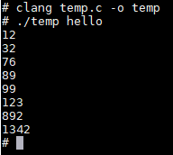

管道是什么
首先来看一个命令：
cat file1 file2 | sort
cat表示读取file1、file2中的数据，然后使用管道 |，将这些内容作为输入，使用sort函数作为输出，最后输出在屏幕上。
管道做了什么事
熟悉类UNIX系统的朋友一定经常使用管道，其实它就是用来做进程通讯的。
我们很多时候需要将一个文件中的内容作为另一个文件的输入，或者将一个程序运行的结果作为另一个程序的输入，这时候管道就派上用场了。我们这里先只考虑无名管道。
无名管道
- 只能用于具有亲缘关系的进程之间，父子进程，兄弟进程之间通信，因为只有子进程才能继续父进程的文件描述符。
- 半双共通信（同一时刻只能对管道进行一种操作（读操作或者写操作）），具有读端口和写端口。
- 管道是一种特殊的文件，可以使用文件I/O函数（read,write...）来操作，但不能使用lseek函数来定位操作。
- 管道是在内存中，不用我们主动去删除。
- 管道是基于队列实现的，有大小限制。
管道实现原理
相关概念与函数
文件描述符(File Descriptor)
对于内核而言，所有打开文件都是由文件描述符引用。文件描述符（fd）是一个非负整数。
当打开一个现存文件或者创建一个新文件时，内核向进程返回一个文件描述符。fd可以理解为一个文件的标识，系统调用中的open和creat都返回fd，并将其作为参数传给read或write。
通常情况，UNIX shell使文件描述符0与进程的标准输入相结合，文件描述符1与标准输出相结合，文件描述符2与标准出错输出相结合。
因此，文件描述符可以看成是文件描述符表的一个下标，我们可以通过这个fd访问文件的信息（fstate），也可以使用write或read对文件进行修改，具体细节可参考这篇文章。
总之，文件描述符是标识每一个文件及状态的重要标识，而UNIX默认使用0,1,2作为标准输入输出以及错误输出，因此，我们如果想要改变标准输出，就需要将0,1对应的标准输入输出改成我们需要的文件，这样，就可在程序本身不知情的情况下对其进行操作。
fork()
fork()可以用来新建进程，实际上是创建一个原进程的副本，包括文件描述符、寄存器值等，子进程和父进程互不相关，如果一个进程的变量发生变化，并不会影响另一个进程。
由于我们是无名管道，需要知道进行传输的两个进程之间的文件描述符，因此fork()必不可少。
dup()
dup(fd)为复制文件操作符的系统函数，可以定向目前未被使用的最小文件操作符到fd所指的文件（回忆文件操作符其实只是一个下标）。
例如，如果我们想用一个程序使用一个普通文件作为标准输出，怎么做？可以先关闭文件描述符1，再打开一个新文件（open系统调用函数返回的fd从0开始寻找未被使用的最小文件描述符），这时候，文件描述符1就被定向到那个我们需要进行输出的普通文件。但当我们完成输出后，标准输出已经无法恢复。
因此，我们需要使用dup来将多个文件描述符对应到标准输出，这样我们就可以进行恢复。
下面是主要操作方法：
fd = dup(1)
该操作将标准输出（1）分配一个新的文件描述符fd，并使之对应于标准输出文件（屏幕）。也就是说，现在也可以使用fd进行标准输出了，效果与默认的标准输出一样。
然后，我们可以将标准输出（1）关闭，打开一个新文件，这时候，新文件的文件描述符就为1，因此这个文件就作为了标准输出。
当需要恢复原来的标准输出时，先关闭文件操作符1（使之空闲），然后执行：
n = dup(fd)
这时候，dup自动找到最小的空闲文件操作符（1），并被定向到fd所指的文件，也就是标准输出。
pipe()
pipe(&fd[0])系统调用创建一个管道并返回两个文件描述符，一个用于写，一个用于读。
一般来说，在本条语句之后会调用一个fork来创建一个子进程，然后父进程关掉用于读的文件描述符，子进程关掉用于写的文件描述符，这样便可以做到一个进程向管道中写数据，一个进程向管道中读数据了。
execlp()
execlp()函数属于exec()函数族，会从PATH环境变量所指的目录中查找符合参数file的文件名，找到后便执行该文件，然后将第二个以后的参数当做该文件的argv[0]、argv[1]……，最后一个参数必须用空指针(NULL)作结束。（具体用法见后面示例）
实现过程
有了以上的知识，我们就知道如何让两个进程进行通讯了。
- 使用
pipe建立一个管道。 - 使用
fork建立一个子进程，他们共同享有管道的读和写。 - 将一个进程的标准输入改为管道的读，另一个进程的标准输出改为管道的写。
- 使用
exec()函数族运行所需要的程序。
具体示例
我们想自己实现一个管道，可以将number.txt中的数字读取出来，并使用sort函数进行排序，最后将排序结果输出在Shell中。
原始number.txt中为：
99
123
892
12
1342
89
32
76
实现源码
int main(int argc, char *argv[], char **environ)
{
int fd[2];
pipe(fd);
if (fork() != 0)
{
/*this is the father, need to read*/
close(fd[1]);
close(0);
dup(fd[0]);
close(fd[0]);
// dup2(fd[0], 0);
// close(fd[1]);
execlp("sort", "sort", "-n", NULL);
exit(0);
}
else {
/*this is the child, need to write*/
close(fd[0]);
close(1);
dup(fd[1]);
close(fd[1]);
// dup2(fd[1], 1);
// close(fd[0]);
execlp("cat", "cat", "numbers.txt", NULL);
exit(0);
}
exit(0);
return 0;
}
编译运行
笔者使用Minix3.3进行编译，其他类UNIX也可同样进行。即可将排好序的数字输出到Shell： 
心得
- 在UNIX中，标准输入输出也是一个文件，只是默认用文件标识符0,1与之对应。
- 需熟练掌握UNIX系统调用的使用方法，以及进程的管理。
参考资料：
- 进程通信之无名管道
- 在linux上 重定向 管道实现
- 对stdin，stdout 和STDOUT_FILENO，STDIN_FILENO的学习
- Operating System:Design and Implementation,Third Edition